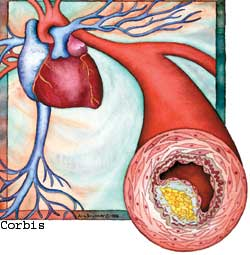
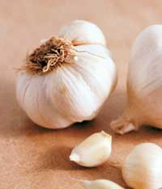
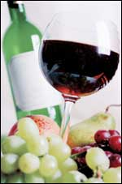

We’ve all known loved ones and friends who have battled high cholesterol, but exactly what is it? Broadly speaking, cholesterol itself is not evil. Our livers manufacture cholesterol - whether or not we eat any - because our bodies need it to maintain healthy cells and to make hormones. Most of us, aside from strict vegetarians, also get a good deal of cholesterol by way of red meat, poultry, fish, eggs and dairy products.
Cholesterol is shuttled within the body by lipoproteins (carriers made of fat plus protein). Low-density lipoproteins (LDL; also known as “bad” cholesterol) transport cholesterol to our tissues: This is the type of cholesterol you want to lower. High-density lipoproteins (HDL; “good” cholesterol) transport cholesterol from the tissues to the liver, where it is metabolized and excreted into the intestinal tract.
About 102 million American adults have total cholesterol levels that are borderline high - 200 to 239 milligrams per deciliter (mg/dL) - and 41 million have levels that are definitely high - more than 240 mg/dL. Some people are genetically unlucky - their bodies simply make too much cholesterol. For the majority of us, though, high cholesterol stems from our lifestyles.
High levels of LDL cholesterol eventually will contribute to atherosclerosis - the result of fatty deposits, cholesterol, cellular waste products, calcium and other substances gradually building up in the inner lining of an artery. Atherosclerosis, which comes from the Greek words athero (meaning gruel or paste) and sclerosis (hardness), is a disease that hardens arteries as we age and reduces the blood flow through our arteries.
Atherosclerosis can lead to heart attacks and strokes, which makes it the leading cause of death in Americans older than 45. However, keeping your cholesterol at a healthy level can help keep your arteries in good condition, and therefore, it is one of the most important factors in maintaining good health.
Many different treatments can help control cholesterol, including prescription drugs and herbal supplements, but other steps are simple lifestyle changes that will benefit anyone who wants a healthier heart.
For most people, atherosclerosis begins slowly and sneakily in childhood and progresses year by year. The process seems to begin with an injury to an artery’s lining that often is an effect of high blood pressure, tobacco byproducts or an amino acid called homocysteine, which is generated by the breakdown of protein.
Cholesterol and other fats become trapped at the damaged site, and when these fats accumulate, they become oxidized. These rancid blood fats are taken up by smooth muscle cells just beneath an artery’s inner lining. An assortment of cells migrate toward the site, hang about and generally cause trouble - a microscopic mob scene otherwise known as plaque.
The problem with arterial plaques is that they impede blood flow. They also can break free and sometimes lodge in fatally inconvenient places, such as the arteries that would otherwise deliver blood to your brain or heart. That can result in a stroke or heart attack.
Research shows that lowering blood cholesterol reduces the risk of heart attack. The solution lies in cleaning up our more slothful, Homer Simpson-type habits. Research by Dr.ean Ornish, author of the book Dean Ornish’s Program for Reversing Heart Disease, demonstrates that comprehensive lifestyle changes can prevent heart disease and actually reverse atherosclerosis. Such changes include good eating habits, exercise and stress reduction.
Eat more plant foods. “In parts of the world where people eat diets based on starches, vegetables and fruits, atherosclerosis is extremely rare,” says Dr. John McDougall, author of the book The McDougall Program for a Healthy Heart. “In the United States, where we eat too few of these plant foods, heart attacks are our number-one killer.”
According to studies published in the Archives of Internal Medicine and the American Journal of Clinical Nutrition, people who eat a diet of fruits, vegetables, beans, fish, poultry and whole grains have a significantly lower risk of having a heart attack compared to those who eat a typical Western diet rich in sweets, fried foods, high-fat dairy products, refined grains, and red and processed meats. If you lower your consumption of animal products, you’ll automatically reduce your intake of cholesterol, saturated fats and methionine - an amino acid the body converts to homocysteine, which raises the risk of heart disease.
By putting fruits, vegetables and whole grains at the base of your food pyramid, you’ll also take in antioxidants, which prevent LDL cholesterol from oxidizing, and fiber, which binds to cholesterol through digestion. Water-soluble fiber (such as that found in oats, apples, beans and psyllium seeds) is best at lowering cholesterol.
A 2003 study published in the Journal of the American Medical Association found that a diet high in plant sterols, soy protein and almonds lowers cholesterol as much as lovastatin (Mevacor), a prescription drug for lowering cholesterol. The study participants also included eggplant, okra, barley and psyllium seeds in their diets.
Get the good fats. It’s important to understand which fats are bad for your arteries. The general rule is that “bad” fats are solid at room temperature. Saturated fat, trans fats and dietary cholesterol raise blood cholesterol. Saturated fats and dietary cholesterol come from animal products. Trans fats are created when liquid vegetable oils are solidified in a process called hydrogenation and when polyunsaturated fats (vegetable oils) are exposed to high heat (when cooking french fries, for example). Trans fats are commonly found in margarine, crackers and processed snack foods.
Monounsaturated fats and polyunsaturated fats don’t raise cholesterol. Canola oil, olive oil, peanut oil and avocados contain monounsaturated fats, while safflower, sesame and sunflower seeds, corn, soybeans and many nuts contain polyunsaturated fats. Some studies suggest these oils can help lower LDL cholesterol slightly when eaten as part of a low-saturated fat diet.
Eat oats, beans and amaranth. Oats have been the subject of a number of studies. It turns out they lower cholesterol, triglycerides and blood pressure. Oat bran is a soluble fiber that increases the elimination of cholesterol in bile. In other words, cholesterol gets trapped in the intestines and is eliminated. Fans of amaranth cereal should know this grain also lowers cholesterol. Wheat, however, does not.
Beans figure in the list of soluble fiber-rich foods. Remember the schoolyard chant, “Beans, beans, good for your heart ...”? Well, it’s true. According to a 2001 study from the Archives of Internal Medicine, people who eat beans four times a week reduce their heart disease risk by 20 percent. Any legumes will do - try lentils, pinto beans, black beans or soybeans. If you’re moving toward a near-vegetarian diet, beans provide a stick-to-your-ribs substitution for meat.
Move your body. Exercise lowers cardiovascular risk factors by keeping weight in check, strengthening the heart, relieving stress, improving circulation, raising HDL cholesterol, and lowering blood pressure and triglyceride levels. Brisk walking is McDougall’s exercise of choice, especially for people who already have heart disease. Walk for 20 to 30 minutes four or more times weekly. According to a 2001 study published in the Journal of the American Medical Association, women who walk regularly (even at a leisurely pace) have a 50- percent lower chance of having a heart attack or needing surgery for blocked coronary arteries.
Be lean. Excess weight contributes to high blood pressure, elevated cholesterol levels and diabetes - each a risk factor for heart disease. Research shows that obesity can quadruple your odds of dying from heart disease and that losing weight can lower risk factors.
Stop smoking. Among other evils, cigarette smoke injures the arterial lining, constricts coronary arteries, elevates and oxidizes LDL cholesterol, lowers HDL cholesterol, raises triglycerides and promotes clot formation. Fortunately, the risk of heart attack tapers off soon after kicking the habit.
Enjoy the purple grape. Moderate drinking lowers heart-disease risk, but heavy drinking (more than two drinks per day) increases the risk. Moderate drinking is about one drink per day for women; two for men. Although any kind of alcohol has cardiovascular benefits, red wine has the additional benefit of being rich in bioflavonoids that decrease platelet stickiness (to discourage abnormal blood clots) and act as strong antioxidants. Antioxidants help mop up damage caused by free radicals, which are marauding chemicals that can injure tissues, including arterial linings, and alter LDL cholesterol so it’s more likely to cause atherosclerosis.
Blue, purple and red berries, as well as purple grapes and their juices, contain these bioflavonoids. Research shows that 8 to 10 ounces per day of red grape juice protects the vessels, without the risks associated with alcohol. Likewise, grapeseed extract, which concentrates these potent bioflavonoid antioxidants, has been shown to lower cholesterol deposits in the arteries of animals.
Take time to relax. Intuition and scientific research support the notion that hostility and anxiety stress the cardiovascular system, and that a mellow state of mind can mend it. One study, published in a 1999 issue of the Journal of Psychosomatic Research, looked at the impact of “daily hassles.” As hassles rose, the total cholesterol-to-HDL cholesterol ratio increased. According to a study published in the journal Stroke, transcendental meditation has been shown to reduce stress, blood pressure, cholesterol and atherosclerosis.
All these basic lifestyle changes are critical to heart health - and they work. The Harvard School of Public Health’s Nurses’ Health Study confirms that women who don’t smoke, keep their weight down, exercise at least 30 minutes daily and eat healthy food reduce their chances of developing heart disease by a whopping 82 percent.
People with borderline high cholesterol may want to add herbs and vitamins to the above regimen, and those who have documented high cholesterol may want to take a prescription medication to get their levels under control. McDougall says when his patients can’t control cholesterol with lifestyle changes, he recommends natural remedies such as garlic, oat bran and niacin. He reserves prescription medications for those people who continue to have high cholesterol levels and other heart disease risks.
B vitamins. Niacin, also called vitamin B3, raises HDL cholesterol and lowers LDL cholesterol and triglycerides. It also raises homocysteine levels, but nonetheless, reduces the risk of death due to heart disease. McDougall calls niacin, “the most potent drug available to raise HDL cholesterol.”
In a 1994 study published in the Archives of Internal Medicine, niacin was compared to the cholesterol-lowering drug lovastatin. The drug produced a greater reduction in LDL cholesterol (32 percent versus 23 percent for niacin), but niacin increased HDL cholesterol much more than lovastatin (by 33 percent versus 7 percent for lovastatin). For this reason, niacin often is combined with statin medications, which are drugs that lower LDL cholesterol.
Other B vitamins play a role in lowering blood levels of homocysteine, which is another risk factor for cardiovascular disease. Maintaining adequate dietary intake of folic acid, vitamin B6 and vitamin B12 can help keep homocysteine levels in check. In people with atherosclerosis, supplements of folic acid (2.5 mg), vitamin B6 (25 mg) and vitamin B12 (250 micrograms [mcg]) induced regression of atherosclerosis, according to a 2000 study from the American Journal of Hypertension. A 2001 Archives of Internal Medicine study found the optimal dosage of folic acid is 800 mcg per day.
Garlic. Michael Castleman, author of Blended Medicine, The New Healing Herbs and many other health books, calls garlic “the ultimate herb for preventing heart attack and stroke.” It has antioxidant activity and can protect LDL cholesterol from oxidation. It mildly lowers blood pressure, inhibits platelets from clumping (a step in blood clot formation), enhances the breakdown of clots within blood vessels and diminishes the arterial stiffness that comes with age and high blood pressure. Garlic also lowers triglycerides and LDL cholesterol, and raises HDL cholesterol, and the plant’s sulfur-containing compounds inhibit the liver’s manufacture of cholesterol.
Although two 1998 studies failed to find benefit from garlic supplements, at least 14 other studies demonstrate that garlic preparations decreased total serum cholesterol and LDL cholesterol. Overall, the herb lowers cholesterol by about 12 percent. “The total weight of the evidence shows that garlic lowers cholesterol, particularly when used as part of a comprehensive program,” Castleman says.
In a 2001 study published in the Journal of the American College of Nutrition, researchers compared enteric-coated garlic powder tablets with a placebo in treating people with high cholesterol who had not improved on drug therapy. After 12 weeks, the garlic group had significant reductions in total cholesterol and LDL cholesterol, while the placebo group had a slight increase in both. A four-year study of people with advanced atherosclerosis, published in the journal of the same name, found that 900 mg per day of a standardized garlic powder shrank atherosclerotic plaques by 2.6 percent, compared to a 15.6-percent increase in the placebo group.
When garlic is chopped, the enzyme allinase converts the sulfur-containing amino acid alliin to allicin, which produces garlic’s renowned odor and most of its therapeutic effects. Subsequent testing of garlic brands found the lot used in one of the negative studies mentioned above had almost no detectable amount of allicin. Conversely, testing of the batch used in a positive study showed the products were higher in allicin. Heat destroys allinase, and Castleman also says one of the studies showing garlic to be ineffective used steam-distilled garlic, which contains no allicin.
Most studies have used a dosage of 600 to 900 mg of powdered garlic that contained about 1.3 percent allicin. Many experts prefer raw garlic, but how much is enough? Castleman says the research varies, from one or two cloves daily, to up to 10 cloves. It depends how much your palate and digestion (and your friends) can handle.
Soy. Eating soy products, particularly when substituted for meat, reduces cholesterol. According to a 2000 study in the Journal of the American College of Cardiology, soy enhances liver metabolism of LDL cholesterol and also may lower blood pressure, reduce atherosclerosis and increase arterial elasticity.
Most studies have shown soy lowers both total and LDL cholesterol while raising HDL cholesterol. A simple strategy is to incorporate soybeans (and other beans) into your diet. Snack on edamame and use textured vegetable protein, tofu and tempeh in lieu of meat. (For more about soy, see “Be Particular About Your Protein,” December/January 2005. - Mother)
Guggul. This herb comes from the resin of the mukul myrrh tree (Commiphora mukul), which is native to India. It has been used in Ayurvedic medicine for more than 2,000 years to treat a variety of ailments, including cardiovascular disease. The active ingredient, guggulsterone, seems to lower cholesterol by increasing the rate at which the liver both takes up and breaks down LDL cholesterol from the blood.
The research on guggul isn’t as extensive as it is for garlic, yet a few studies have found that guggul, either used alone or when combined with garlic and onion, can lower your cholesterol and triglyceride levels.
Dr. Linda B. White is the co-author of Kids, Herbs, & Health (Interweave, 1998) and The Herbal Drugstore (Rodale, 2000).
|
TOM GRIFFIN High levels of LDL cholesterol eventually contribute to atherosclerosis, the process in which deposits of fatty substances, cholesterol, cellular waste products, calcium and other substances build up in the inner lining of an artery, as illustrated here. |
 CORBIS Natural remedies such as garlic can be effective weapons against the unseen hazards of high cholesterol and plaque. |
 Fruit is a great source of antioxidants and water- soluble fiber that can lower and prevent LDL (“bad” cholesterol) from accumulating in your arteries. |
|
 Fruit is a great source of antioxidants and water-soluble fiber that can lower and prevent LDL (“bad” cholesterol) from accumulating in your arteries. |
|
|